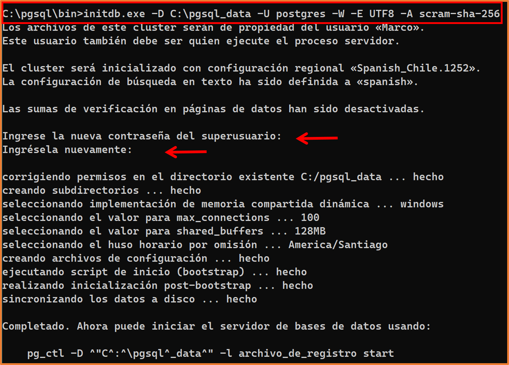
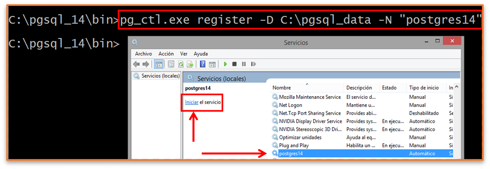
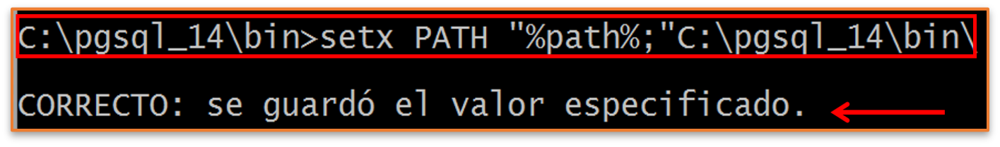
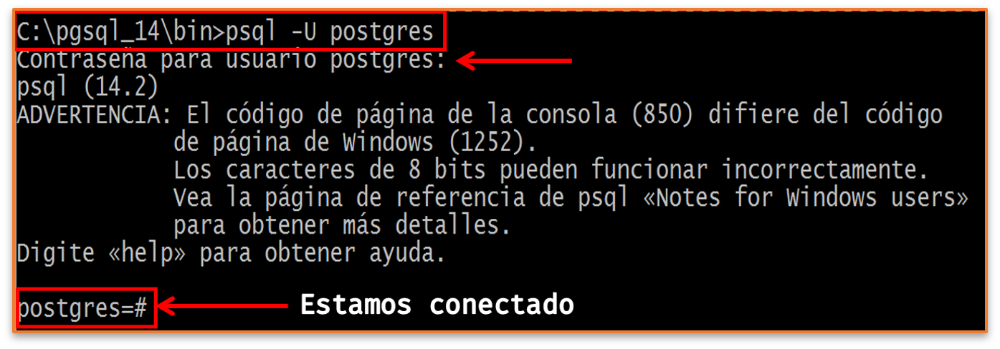

CONTENIDO⚓
- Descargar el zip
- Extraer el contenido
- Crear carpeta para las configuraciones
- Configuración inicial
- Lanzar y detener el servidor
- Configurar PostgreSQL como un servicio
- Conectarse al servidor de PostgreSQL
- Operaciones básicas en PostgreSQL
DESCARGAR ARCHIVO ZIP⚓
Descarga los binarios desde la siguiente web ▶ aquí.
Selecciona la versión y la arquitectura de tu equipo.

EXTRAER CONTENIDO⚓
Descomprimir los archivos, para este ejemplo será en la siguiente ubicación:
“C:\postgresql-14”

Otra manera por medio de PowerShell sería escribiendo los siguientes comandos (De acuerdo al destino de donde se descomprimirá, y donde estén los binarios descargados, remplace el valor de las variables):
$destination = "c:\postgresql-14"
$sourceZip = "C:\Users\enidev911\Downloads\postgresql-14.4-1-windows-x64-binaries.zip"
Add-Type -AssemblyName system.io.compression.filesystem
$fileZip = [System.IO.Compression.ZipFile]::OpenRead($sourceZip)
[System.IO.Compression.ZipFile]::ExtractToDirectory($sourceZip, $destination)
CREAR CARPETA DATA⚓
Debemos crear una carpeta donde se almacenarán las configuraciones del servidor de PostgreSQL. También se
guardarán
los
datos, usuarios, etc. En mi caso la voy a crear en el mismo nivel en la siguiente ubicación:
“C:\postgresql_data”
CONFIGURACIÓN INICIAL⚓
Configuramos el usuario, la contraseña, encriptación, y la codificación para la base de datos.
Nos cambiamos al directorio de instalación y entramos a la carpeta bin:
cd C:\pgsql_14\bin
Y ejecutamos el siguiente comando:
initdb.exe -D C:\pgsql_data -U postgres -W -E UTF8 -A scram-sha-256
- -D: especifique el directorio de almacenamiento del clúster de bases de datos en mi caso (C:\pgsql_data).
- -U postgres: crea al superusuario como postgres.
- -W: solicita la contraseña del superusuario.
- -E UTF8: crea la base de datos con codificación UTF-8.
- -A scram-sha-256: habilita la autenticación de contraseña.

INICIAR Y DETENER SERVIDOR DE POSTGRESQL⚓
Para ver el estado del servidor y ver si se encuentra en ejecución o no:
pg_ctl.exe -D C:\pgsql_data -l logfile status
# Otra opción es
pg_isready.exe
Para iniciar el servidor ejecute el comando:
pg_ctl.exe -D C:\pgsql_data -l logfile start
Para detener el servidor::
pg_ctl.exe -D C:\pgsql_data stop
Para reiniciar el servidor:
pg_ctl.exe -D C:\pgsql_data restart
Nota: cualquier acción con el servidor es obligatorio indicar el directorio de datos
REGISTRAR COMO SERVICIO EN WINDOWS⚓
Para ejecutar este comando debe abrir un CMD como administrador:
pg_ctl.exe register -D C:\pgsql_data -N "postgres14"

Para ejecutar después el programa cliente psql desde cualquier ubicación establecemos esa variable de entorno puede ser con CMD normal o como administrador:
setx PATH "%path%;"C:\pgsql_14\bin\

Para eliminar el servicio abrimos una sesión CMD como administrador y ejecutamos el comando:
sc delete postgres14
CONECTARSE AL SERVIDOR DE POSTGRESQL⚓
Usando el cliente integrado psql.exe podremos conectarnos a nuestro servidor. Lo siguiente es
llamar
al
programa e iniciar sesión indicando el usuario y luego nos pedirá el password.
psql -U postgres
Cuando se le solicite la contraseña, ingrese la contraseña que configuró durante la instalación. El prompt nos indica que estamos conetado con éxito y listo para realizar sentencias SQL.

OPERACIONES BÁSICA EN POSTGRESQL⚓
- Para listar los usuarios, use el comando
\du - Para enumerar todas las bases de datos, use el comando
\listo\l. - Para salir solo escribimos
exito\q. - Para cambiar a una nueva base de datos, use el comando
\connect <database>o\c <database name>. - Para mostrar tablas de una base de datos, use el comando
\dto\dt+. - Para realizar una copia de seguridad o un volcado de la base de datos, use el comando:
pg_dump.exe -U postgres -d <database name> -f <path>\backup.sql - Para importar un archivo
.pgsqlo.sqlexistente al servidor de la base de datos, use el siguiente comando.
psql.exe -h <hostname> -U postgres < <path>\backup.sql